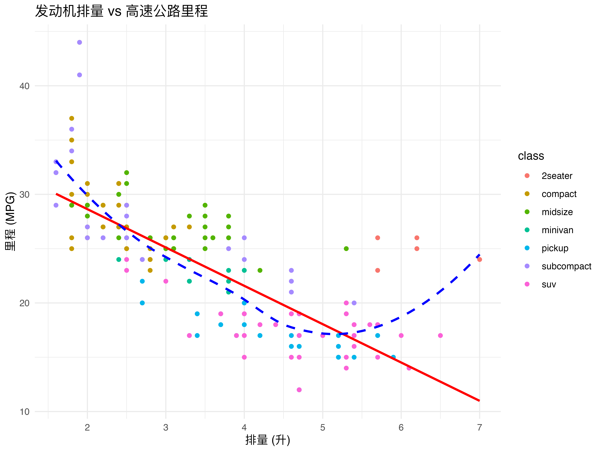

library(tidyverse)
# glimpse(mpg)第六周：探索关系：相关与简单线性回归入门
1. 变量之间的关系
前几周我们关注于描述单个变量的特征（分布）或比较不同组别在某个变量上的差异（均值比较）。本周我们将开始探索两个或多个变量之间是否存在关联，以及如何量化和描述这种关联。
本周目标
- 理解相关性分析的目的和局限性（相关不等于因果）。
- 掌握 Pearson 和 Spearman 相关系数的适用场景、计算和显著性检验。
- 能够结合散点图直观理解相关性。
- 理解简单线性回归 (SLR) 的基本概念、模型形式和系数含义。
- 了解最小二乘法 (OLS) 的基本思想。
- 能够使用 R 的
lm()函数拟合 SLR 模型并解读基本输出（系数、R²）。 - 初步了解多元线性回归 (MLR) 的动机和“偏回归系数”的概念。
我们将继续使用 mpg 数据集，并可能引入其他示例。
2. 相关分析 (Correlation Analysis)
相关分析用于衡量两个连续变量之间线性关联的强度和方向。
- 相关不等于因果 (Correlation does not imply causation!)
相关不等于因果
在统计分析中，相关关系与因果关系是截然不同的概念。当我们观察到两个变量之间存在相关性时，可能有以下四种解释：
- 直接因果：X 直接导致 Y 的变化。
- 反向因果：Y 的变化反过来影响 X。
- 共同原因：存在第三方变量 Z 同时影响 X 和 Y。
- 随机巧合：变量间的关联纯属偶然。
需要特别注意的是，相关分析仅能揭示变量是否共同变化，而无法证明因果关系。要确定因果关系，通常需要借助更严谨的研究设计（如随机对照实验）或坚实的理论依据。
相关不等于因果的典型案例
- 冰淇淋与溺水：冰淇淋销量与溺水人数高度相关。但这并非因为吃冰淇淋导致溺水，而是因为两者都与夏天/高温这个混淆变量相关。
- 雨伞与感冒：雨伞销量与感冒人数呈正相关。这并不意味着使用雨伞会导致感冒，而是因为两者都与雨天这个共同因素相关。
- 鞋子尺寸与阅读能力：儿童的鞋子尺寸与其阅读能力呈正相关。这显然不是因果关系，而是因为两者都与年龄这个变量相关。
- 医院数量与犯罪率：一个城市的医院数量与犯罪率呈正相关。这并不意味着医院导致犯罪，而是因为两者都与城市人口规模相关。
相关系数 (Correlation Coefficient, \(r\)):
- 衡量线性关联强度和方向的数值，范围在 \(-1\) 到 \(+1\) 之间。
- 符号表示方向：
- \(r > 0\): 正相关 (一个变量增加，另一个变量倾向于增加)。
- \(r < 0\): 负相关 (一个变量增加，另一个变量倾向于减少)。
- \(r = 0\): 无线性相关 (注意：可能存在非线性关系)。
- 绝对值表示强度：
- \(|r|\) 接近 1: 强线性相关。
- \(|r|\) 接近 0: 弱线性相关或无线性相关。
- 强度划分没有绝对标准，通常：0.1-0.3 (弱), 0.4-0.6 (中), 0.7-1.0 (强)。
常用相关系数:
- 皮尔逊积矩相关系数 (Pearson Product-Moment Correlation Coefficient, \(r\)):
- 最常用的相关系数。
- 衡量两个连续变量之间线性关联的强度和方向。
- 假设条件:
- 变量是连续的。
- 变量之间存在线性关系（可通过散点图初步判断）。
- 数据近似服从二元正态分布（或样本量足够大）。对异常值比较敏感。
- 公式: \(r = \frac{\sum_{i=1}^{n}(x_i - \bar{x})(y_i - \bar{y})}{\sqrt{\sum_{i=1}^{n}(x_i - \bar{x})^2 \sum_{i=1}^{n}(y_i - \bar{y})^2}}\)
- 斯皮尔曼等级相关系数 (Spearman Rank Correlation Coefficient, \(\rho\) 或 \(r_s\)):
- 基于变量值的秩次 (Rank) 计算的相关系数。
- 衡量两个变量之间单调关系 (Monotonic Relationship) 的强度和方向（即一个变量增加，另一个变量也倾向于增加或减少，但不一定是直线）。
- 适用场景:
- 变量是有序分类变量 (Ordinal)。
- 连续变量不满足 Pearson 相关系数的正态性或线性假设。
- 数据中存在异常值（对异常值不敏感）。
- 计算方法：先将两个变量的数据分别排序并转换为秩次，然后计算秩次的 Pearson 相关系数。
- 皮尔逊积矩相关系数 (Pearson Product-Moment Correlation Coefficient, \(r\)):
可视化：散点图 (Scatter Plot) 散点图是判断两个连续变量关系类型（线性、非线性、无关系）和观察异常值的最佳工具。
# 探索发动机排量 (displ) 与高速公路里程 (hwy) 的关系 ggplot(mpg, aes(x = displ, y = hwy)) + geom_point(aes(color = class)) + # 用颜色区分车辆类别 geom_smooth(method = "lm", se = FALSE, color = "red") + # 添加线性拟合线 (后面会讲) geom_smooth(se = FALSE, color = "blue", linetype = "dashed") + # 添加非线性平滑曲线 (LOESS) labs(title = "发动机排量 vs 高速公路里程", x = "排量 (升)", y = "里程 (MPG)") + theme_minimal() # 从图中可以看出，两者大致呈负相关关系，可能略带曲线。
R 实现:
cor(x, y, method = ...): 计算相关系数。method: “pearson” (默认), “spearman”, “kendall”。
cor.test(x, y, method = ...): 计算相关系数，并进行显著性检验。- 显著性检验的原假设 \(H_0\): 两个变量之间没有相关性 (总体相关系数 \(\rho = 0\))。
- 备择假设 \(H_1\): 两个变量之间存在相关性 (\(\rho \ne 0\))。
- 返回结果包括相关系数估计值、P 值和置信区间。
# 计算 displ 和 hwy 的 Pearson 相关系数 cor(mpg$displ, mpg$hwy, method = "pearson")#> [1] -0.76602# 进行 Pearson 相关性检验 pearson_test <- cor.test(mpg$displ, mpg$hwy, method = "pearson") print(pearson_test)#> #> Pearson's product-moment correlation #> #> data: mpg$displ and mpg$hwy #> t = -18.151, df = 232, p-value < 2.2e-16 #> alternative hypothesis: true correlation is not equal to 0 #> 95 percent confidence interval: #> -0.8142727 -0.7072539 #> sample estimates: #> cor #> -0.76602# 解读: # r 约 -0.76 (强负相关) # P 值非常小 (< 2.2e-16)，远小于 0.05，拒绝 H0，认为 displ 和 hwy 之间存在显著的线性相关性。 # 95% 置信区间 [-0.81, -0.71]，不包含 0，也支持拒绝 H0。 # 计算 displ 和 hwy 的 Spearman 相关系数 (对非线性关系和异常值更稳健) cor(mpg$displ, mpg$hwy, method = "spearman")#> [1] -0.8266576# 进行 Spearman 相关性检验 spearman_test <- cor.test(mpg$displ, mpg$hwy, method = "spearman") print(spearman_test)#> #> Spearman's rank correlation rho #> #> data: mpg$displ and mpg$hwy #> S = 3900727, p-value < 2.2e-16 #> alternative hypothesis: true rho is not equal to 0 #> sample estimates: #> rho #> -0.8266576# 解读: # rho 约 -0.83 (强负单调关系) # P 值也非常小，拒绝 H0，认为存在显著的单调关系。
3. 简单线性回归 (Simple Linear Regression, SLR)
相关分析告诉我们变量间关联的强度和方向，而回归分析 (Regression Analysis) 则更进一步，试图建立一个数学模型来描述一个或多个自变量 (Independent Variable / Predictor) 如何影响一个因变量 (Dependent Variable / Response)。
简单线性回归是其中最基础的形式，用于描述一个连续自变量 X 如何线性地影响一个连续因变量 Y。
概念引入: 我们试图找到一条最佳拟合直线，来概括散点图中两个连续变量 (X, Y) 之间的关系。这条直线可以用来：
- 描述 X 对 Y 的影响程度（斜率）。
- 基于 X 的值来预测 Y 的值。
模型形式: \[ Y = \beta_0 + \beta_1 X + \epsilon \]
- \(Y\): 因变量 (Response)。
- \(X\): 自变量 (Predictor)。
- \(\beta_0\): 截距 (Intercept)。当 \(X=0\) 时，Y 的期望值。有时没有实际意义（例如 X 不能取 0）。
- \(\beta_1\): 斜率 (Slope)。X 每增加一个单位时，Y 的期望平均变化量。这是衡量 X 对 Y 线性影响的关键系数。
- \(\epsilon\): 误差项 (Error Term) / 残差 (Residual)。代表了除 X 之外所有其他影响 Y 的因素，以及模型本身的随机性。假设误差项是独立的，且服从均值为 0，方差为 \(\sigma^2\) 的正态分布 (\(N(0, \sigma^2)\))。
系数含义解释 (重要！):
- \(\beta_0\) (截距): 当自变量 X 为 0 时，因变量 Y 的预测值。
- \(\beta_1\) (斜率): 自变量 X 每变化一个单位，因变量 Y 平均变化 \(\beta_1\) 个单位。
最小二乘法 (Ordinary Least Squares, OLS) 思想:
- 如何找到“最佳”拟合直线？OLS 的目标是找到一条直线，使得所有实际观测值 \(y_i\) 与直线上预测值 \(\hat{y}_i = \hat{\beta}_0 + \hat{\beta}_1 x_i\) 之间的纵向距离（残差 \(e_i = y_i - \hat{y}_i\)）的平方和最小。
- 即最小化：\(\sum_{i=1}^{n} e_i^2 = \sum_{i=1}^{n} (y_i - \hat{y}_i)^2 = \sum_{i=1}^{n} (y_i - (\hat{\beta}_0 + \hat{\beta}_1 x_i))^2\)
- 通过微积分可以推导出 \(\hat{\beta}_0\) 和 \(\hat{\beta}_1\) 的估计公式。
R 实现:
lm()(Linear Model)- 使用公式语法
Y ~ X。
# 拟合一个用 displ 预测 hwy 的简单线性回归模型 # hwy = beta0 + beta1 * displ + epsilon slr_model <- lm(hwy ~ displ, data = mpg) # 查看模型基本信息 print(slr_model)#> #> Call: #> lm(formula = hwy ~ displ, data = mpg) #> #> Coefficients: #> (Intercept) displ #> 35.698 -3.531# 查看详细的汇总统计信息 (最常用) summary_slr <- summary(slr_model) print(summary_slr)#> #> Call: #> lm(formula = hwy ~ displ, data = mpg) #> #> Residuals: #> Min 1Q Median 3Q Max #> -7.1039 -2.1646 -0.2242 2.0589 15.0105 #> #> Coefficients: #> Estimate Std. Error t value Pr(>|t|) #> (Intercept) 35.6977 0.7204 49.55 <2e-16 *** #> displ -3.5306 0.1945 -18.15 <2e-16 *** #> --- #> Signif. codes: 0 '***' 0.001 '**' 0.01 '*' 0.05 '.' 0.1 ' ' 1 #> #> Residual standard error: 3.836 on 232 degrees of freedom #> Multiple R-squared: 0.5868, Adjusted R-squared: 0.585 #> F-statistic: 329.5 on 1 and 232 DF, p-value: < 2.2e-16- 使用公式语法
基本输出解读 (
summary(slr_model))Coefficients表:Estimate: 系数的点估计值 (\(\hat{\beta}_0\) 和 \(\hat{\beta}_1\))。- \(\hat{\beta}_0 \approx 35.70\): 当发动机排量为 0 时，预测的高速公路里程约为 35.7 MPG (这里截距可能没有实际意义)。
- \(\hat{\beta}_1 \approx -3.53\): 发动机排量每增加 1 升，高速公路里程平均减少约 3.53 MPG。
Std. Error: 系数估计值的标准误，衡量估计的不确定性。t value: 检验系数是否显著不为 0 的 t 统计量 (\(t = \frac{\hat{\beta}}{\text{Std. Error}}\))。\(H_0: \beta = 0\) vs \(H_1: \beta \ne 0\)。Pr(>|t|): 对应 t 检验的 P 值。如果 P 值 < \(\alpha\)，则认为该系数显著不为 0，即该自变量对因变量有显著的线性影响。在本例中，displ 的 P 值远小于 0.05，说明排量对高速里程有显著的负向影响。
- R-squared (\(R^2\)) (决定系数 Coefficient of Determination):
- 表示因变量 Y 的总变异中，能被自变量 X (模型) 解释的比例。范围在 0 到 1 之间。
- \(R^2 = 1 - \frac{\sum e_i^2}{\sum (y_i - \bar{y})^2} = \frac{\text{模型解释的平方和}}{\text{总平方和}}\)
- 这里的
Multiple R-squared: 0.5868意味着发动机排量 (displ) 解释了高速公路里程 (hwy) 变异的约 58.7%。 Adjusted R-squared: 对自变量个数进行惩罚的 R²，在多元回归中更有用，用于模型比较。
- F-statistic 和 p-value: 对整个模型整体显著性的检验。\(H_0\): 所有回归系数（除截距外）都为 0。在 SLR 中，它等价于对 \(\beta_1\) 的 t 检验。如果 P 值 < \(\alpha\)，则认为模型整体是显著的。
4. 多元线性回归 (Multiple Linear Regression, MLR) 概念初步引入
现实世界中，一个因变量往往受到多个自变量的影响。MLR 将 SLR 扩展到包含两个或更多自变量的情况。
动机:
- 更准确地预测 Y（包含更多相关信息）。
- 控制其他变量的影响，估计某个特定自变量对 Y 的独立效应 (Independent Effect)。
模型形式: \[ Y = \beta_0 + \beta_1 X_1 + \beta_2 X_2 + ... + \beta_k X_k + \epsilon \]
- \(X_1, X_2, ..., X_k\): k 个自变量。
- \(\beta_0\): 截距。当所有自变量都为 0 时，Y 的期望值。
- \(\beta_1, \beta_2, ..., \beta_k\): 偏回归系数 (Partial Regression Coefficients)。
核心概念：偏回归系数 \(\beta_j\)
- \(\beta_j\) 表示在控制住模型中所有其他自变量 (\(X_1, ..., X_{j-1}, X_{j+1}, ..., X_k\)) 不变的情况下，自变量 \(X_j\) 每增加一个单位时，因变量 Y 的期望平均变化量。
- 重要区别: MLR 中的 \(\beta_j\) 不等于 单独做 Y 对 \(X_j\) 的 SLR 时的斜率！因为它考虑并剔除了其他自变量的影响。这使得我们能更准确地评估 \(X_j\) 对 Y 的独立贡献。
R 实现: 仍然使用
lm()函数，在公式中加入更多自变量。 (我们将在后续课程中深入学习 MLR 的模型构建、诊断和选择。)后续重要性: 拟合 MLR 模型只是第一步。后续需要进行模型诊断（检查假设是否满足）、模型选择（选择最佳的自变量组合）等，这些是阶段二的核心内容。
5. 项目相关与本周总结
- 项目任务:
- 计算你项目中连续变量之间的相关系数（Pearson 或 Spearman，根据情况选择），并进行显著性检验。结合散点图进行解释。
- 如果你的项目问题涉及用一个连续变量预测另一个连续变量，尝试构建一个简单线性回归模型。解释模型的系数 (\(\hat{\beta}_0, \hat{\beta}_1\)) 和 R²。
- 思考你的项目中，是否需要考虑多个自变量来预测因变量？如果是，初步设想一个 MLR 模型（写下公式即可），并思考每个自变量的偏效应可能是什么含义。
- 本周回顾: 我们学习了如何使用相关分析来量化两个连续变量的线性关联强度，并强调了相关不等于因果。接着，我们入门了简单线性回归，学习了如何用一条直线来建模和预测，理解了 OLS 原理、模型系数的含义以及 R² 的解释。最后，我们初步接触了多元线性回归的核心思想——控制变量和偏效应，为后续更复杂的模型学习打下了基础。
下周预告: 我们将回到分类数据，学习如何分析两个或多个分类变量之间的关联性，主要工具是卡方检验 (Chi-squared Test)。同时，我们将对第一阶段（第 1-7 周）所学知识进行小结，梳理各种统计方法的适用场景。